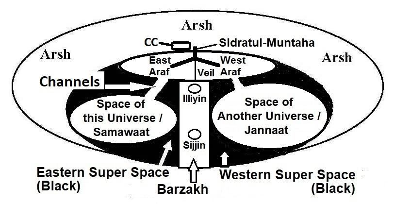

The Surah addresses the wrong orientations of both Europeans and Arabians. A European is inclined to seek resources, while an Arabian is prone to following the wrong Awliya (Guides, Protectors, Helpers, and Friends). The Surah consoles the Believers, advising them to work for the rewards of the Afterlife. It emphasizes the downfall of arrogant disputers and also highlights the limitations of miraculous signs.
সূরাটি ইউরোপীয় এবং আরব উভয়ের ভুল অভিমুখকে সম্বোধন করে। একজন ইউরোপীয় ব্যক্তি সম্পদ খোঁজার দিকে ঝুঁকছে, যখন একজন আরব ভুল আউলিয়া (গাইড, রক্ষক, সাহায্যকারী এবং বন্ধু) অনুসরণ করতে প্রবণ। সূরাটি মুমিনদের সান্ত্বনা দেয়, তাদের পরকালের পুরস্কারের জন্য কাজ করার পরামর্শ দেয়। এটি অহংকারী বিতর্ককারীদের পতনের উপর জোর দেয় এবং অলৌকিক লক্ষণগুলির সীমাবদ্ধতাগুলিও তুলে ধরে।
Segment 1: Salvation of people with Resources and Mobility
সেগমেন্ট 1: সম্পদ এবং গতিশীলতা সহ মানুষের পরিত্রাণ
Segment 2: People following Wrong Awliya (the Guide, Protector, Helper and Friend)
সেগমেন্ট 2: ভুল আউলিয়াকে অনুসরণকারী লোকেরা (পথপ্রদর্শক, অভিভাবক, সাহায্যকারী এবং বন্ধু)
Segment-3: Calling to Islam with Natural Signs
সেগমেন্ট-৩: প্রাকৃতিক নিদর্শন সহ ইসলামের দাওয়াত
Tafsir of the Surah Segment-1 Salvation of people with Resources and Mobility
সূরা সেগমেন্ট-১ এর তাফসীর সম্পদ ও গতিশীলতার সাথে মানুষের মুক্তি
Ha, Mim. The revelation of this Book is from God, Exalted in Power, Full of Knowledge, Who forgives sin, accepts repentance, is strict in punishment, and has a long reach. There is no god but He; to Him is the final goal. Section 2 of Chapter 40 [Verse 4-6]: People with Resources and Mobility
হা, মিম। এই কিতাবের অবতীর্ণ ঈশ্বরের পক্ষ থেকে, যিনি পরাক্রমশালী, জ্ঞানে পরিপূর্ণ, যিনি পাপ ক্ষমা করেন, তওবা কবুল করেন, শাস্তির ক্ষেত্রে কঠোর এবং দীর্ঘ পৌছায়। তিনি ছাড়া কোন উপাস্য নেই; তাঁর কাছেই শেষ লক্ষ্য। অধ্যায় 40 এর অধ্যায় 2 [শ্লোক 4-6]: সম্পদ এবং গতিশীলতা সহ মানুষ
None disputes about the verses of God but the Unbelievers. So, let not their ability of going about here and there through the land deceive you! The People of Noah and the confederates after them denied before them, and every people plotted against their Prophet to seize him, and disputed by means of vanities therewith to condemn the Truth. But, it was I that seized them, and how was My requital! Thus, was the decree of thy Lord proved true against the Unbelievers that truly they are companions of the Fire!
আল্লাহর আয়াত নিয়ে অবিশ্বাসীরা ছাড়া আর কেউ বিতর্ক করে না। সুতরাং, তাদের এদিক-ওদিক ঘুরে বেড়ানোর ক্ষমতা যেন আপনাকে প্রতারিত না করে! নূহ (আঃ) এর কওম এবং তাদের পরের বন্ধুরা তাদের পূর্বে অস্বীকার করেছিল এবং প্রত্যেক সম্প্রদায় তাদের নবীর বিরুদ্ধে ষড়যন্ত্র করেছিল তাকে পাকড়াও করার জন্য এবং সত্যের নিন্দা করার জন্য অসারতার মাধ্যমে বিতর্ক করেছিল। কিন্তু, আমিই তাদেরকে পাকড়াও করেছি, আর আমার প্রতিফল কেমন ছিল! এভাবে কি কাফেরদের বিরুদ্ধে তোমার পালনকর্তার হুকুম সত্য প্রমাণিত হলো যে, তারা জাহান্নামের সাথী!
The above verses say, ―So, let not their ability of going about here and there through the land deceive you!‖ Who are they? The ability to travel across land and sea requires vehicles such as cars, trains, ships, submarines, helicopters, aircraft, spacecraft, and more. These inventions belong to the Europeans, as they were the ones who created them. In the above verses, Noah is mentioned after them, which suggests that Noah was a European Prophet. Jews have maintained their blood, and many of them have blue eyes. It also indicates that Noah was most likely a man with blue eyes. It is likely that Noah lived in the area of the present- day Black Sea before the flood. Northern and Western Europe were almost uninhabited during his time. It may be noted that, according to the Holy Bible, the entire Earth was flooded. However, the Quran does not mention this. It is likely that only Europe and Russia were submerged. Noah, part of his family, a few of his followers, and pairs of local animals, such as polar bears, wolves, snow foxes, ice deer, and so on, were saved in the boat. The preservation of polar animals was necessary due to their specialized nature, suitable for cold terrain. [The flood of Noah is deliberately discussed in Section-10 of Chapter-7.] The Quran clearly states that a few followers of Noah were saved. Present-day Europeans with blue eyes may be descendants of these followers. Therefore, it is likely that Noah, his descendants, his followers, and their descendants (Blue Eyed Europeans) are from the same race, rooted in the area of Black Sea. DNA analyses carried out on the modern Jews give the same indication. The verses say, ―…every People plotted against their Prophet…‖ The European People are included among them. So, their ability should not deceive us. Their ability has greatly advanced in respect of going here and there. They have invented car, ship, submarine, aircraft, and space-craft. They have gone to the Moon. They have mapped the world with precision and placed guiding satellites (GPS) in the sky. Their communication network is so advanced that they can talk to others from their homes and even see them while speaking. They have interconnected the world using supercomputers. However, their store of real knowledge is limited; they have primarily advanced in technology. Section 3 of Chapter 40 [Verse 7-12]: Salvation of People having Resources and Mobility
উপরের আয়াতগুলি বলে, "তাই, তাদের এদিক ওদিক ঘুরে বেড়ানোর ক্ষমতা আপনাকে প্রতারিত না করে!" তারা কারা? স্থল ও সমুদ্র জুড়ে ভ্রমণ করার ক্ষমতার জন্য গাড়ি, ট্রেন, জাহাজ, সাবমেরিন, হেলিকপ্টার, বিমান, মহাকাশযান এবং আরও অনেক কিছুর প্রয়োজন হয়। এই আবিষ্কারগুলি ইউরোপীয়দের অন্তর্গত, কারণ তারাই তাদের তৈরি করেছিল। উপরের আয়াতে তাদের পরে নূহের কথা বলা হয়েছে, যা থেকে বোঝা যায় নূহ একজন ইউরোপীয় নবী ছিলেন। ইহুদিরা তাদের রক্ত বজায় রেখেছে এবং তাদের অনেকের চোখ নীল। এটি আরও ইঙ্গিত করে যে নোহ সম্ভবত নীল চোখের একজন মানুষ ছিলেন। সম্ভবত নোহ বন্যার আগে বর্তমান কৃষ্ণ সাগরের এলাকায় বাস করতেন। তার সময়ে উত্তর ও পশ্চিম ইউরোপ প্রায় জনবসতিহীন ছিল। উল্লেখ্য যে, পবিত্র বাইবেল অনুসারে সমগ্র পৃথিবী প্লাবিত হয়েছিল। যদিও কুরআনে এর উল্লেখ নেই। সম্ভবত শুধুমাত্র ইউরোপ এবং রাশিয়া নিমজ্জিত ছিল। নোহ, তার পরিবারের একটি অংশ, তার কিছু অনুসারী এবং স্থানীয় প্রাণীদের জোড়া, যেমন মেরু ভালুক, নেকড়ে, তুষার শিয়াল, বরফের হরিণ এবং আরও অনেক কিছু নৌকায় রক্ষা পেয়েছিল। ঠাণ্ডা ভূখণ্ডের জন্য উপযুক্ত, তাদের বিশেষ প্রকৃতির কারণে মেরু প্রাণীদের সংরক্ষণের প্রয়োজন ছিল। [নূহের বন্যা ইচ্ছাকৃতভাবে অধ্যায়-7-এর ধারা-10-এ আলোচনা করা হয়েছে।] কুরআন স্পষ্টভাবে বলে যে নূহের কয়েকজন অনুসারী রক্ষা পেয়েছিল। নীল চোখের অধিকারী বর্তমান ইউরোপীয়রা এই অনুসারীদের বংশধর হতে পারে। অতএব, সম্ভবত নোহ, তার বংশধর, তার অনুসারীরা এবং তাদের বংশধররা (ব্লু আইড ইউরোপিয়ান) একই জাতি থেকে, যার মূল রয়েছে কৃষ্ণ সাগরের এলাকায়। আধুনিক ইহুদিদের উপর পরিচালিত ডিএনএ বিশ্লেষণ একই ইঙ্গিত দেয়। আয়াতে বলা হয়েছে, "...প্রত্যেক মানুষই তাদের নবীর বিরুদ্ধে ষড়যন্ত্র করেছে..." ইউরোপীয় জনগণ তাদের অন্তর্ভুক্ত। সুতরাং, তাদের ক্ষমতা আমাদের প্রতারিত করা উচিত নয়. এখানে এবং সেখানে যাওয়ার ক্ষেত্রে তাদের সক্ষমতা অনেক এগিয়েছে। তারা গাড়ি, জাহাজ, সাবমেরিন, বিমান এবং মহাকাশযান আবিষ্কার করেছে। তারা চাঁদে গেছে। তারা বিশ্বকে নির্ভুলতার সাথে ম্যাপ করেছে এবং আকাশে গাইডিং স্যাটেলাইট (GPS) স্থাপন করেছে। তাদের যোগাযোগ নেটওয়ার্ক এত উন্নত যে তারা তাদের বাড়ি থেকে অন্যদের সাথে কথা বলতে পারে এমনকি কথা বলার সময় তাদের দেখতে পারে। তারা সুপার কম্পিউটার ব্যবহার করে বিশ্বকে আন্তঃসংযোগ করেছে। তবে তাদের প্রকৃত জ্ঞানের ভাণ্ডার সীমিত; তারা প্রাথমিকভাবে প্রযুক্তিতে উন্নত হয়েছে। অধ্যায় 40 এর অধ্যায় 3 [পদ 7-12]: সম্পদ এবং গতিশীলতা থাকা লোকদের পরিত্রাণ
Those who sustain the Arsh and those around it sing glory and praise to their Lord, believe in Him, and implore forgiveness for those who believe: "Our Lord! Thy reach is over all things in Mercy and Knowledge; forgive then those who turn in repentance and follow Thy path, and preserve them from the penalty of the Blazing Fire! And grant our Lord that they enter the Jannaat of Eternity, which Thou have promised to them and to the righteous among their fathers, their wives, and their posterity; for Thou are the Exalted in Might, Full of Wisdom. And preserve them from ills, and any whom Thou do preserve from ills that Day, on them will Thou have bestowed mercy indeed, and that will be truly the highest achievement".
যারা আরশকে টিকিয়ে রাখে এবং এর আশেপাশের লোকেরা তাদের প্রভুর গৌরব ও গুণগান গায়, তাঁর প্রতি বিশ্বাস স্থাপন করে এবং যারা বিশ্বাসী তাদের জন্য ক্ষমা প্রার্থনা করে: "হে আমাদের পালনকর্তা! আপনার রহমত ও জ্ঞানের সমস্ত কিছুর উপরে আপনার নাগাল; তারপর যারা তওবা করে এবং আপনার পথ অনুসরণ করে তাদের ক্ষমা করুন এবং তাদের প্রজ্জ্বলিত শাস্তি থেকে রক্ষা করুন, যা তারা আমাদের প্রভুর অগ্নিতে প্রবেশ করেছে এবং তারা জান্নাতে প্রবেশ করেছে! তাদের সাথে এবং তাদের পিতাদের, তাদের স্ত্রীদের এবং তাদের বংশধরদের সাথে প্রতিশ্রুতিবদ্ধ; কারণ আপনি পরাক্রমশালী, প্রজ্ঞায় পরিপূর্ণ এবং তাদের মন্দ থেকে রক্ষা করুন এবং আপনি তাদের প্রতি রহমত দান করবেন এবং এটিই হবে সর্বোচ্চ সাফল্য।"
According to the Hadith, there are angels who carry the Arsh over their heads. Additionally, the above verses mention angels who sustain the Arsh. There is confusion among people regarding the Kursi and Arsh. The Kursi is the seat of Allah, which can extend into a universe, while the Arsh is a special universe that holds the Kursi, the Pen, the Lawh-Mahfuz, a part of Sidratul-Muntaha, the Angels of Arsh, and more. It serves as the Headquarters of Allah. It is His personal domain. FIGURE 40.1: Proximity of Arsh and Araf

চিত্র 40_1 / Figure 40_1
হাদিস অনুসারে, এমন ফেরেশতা রয়েছে যারা তাদের মাথার উপর আরশ বহন করে। উপরন্তু, উপরের আয়াতে ফেরেশতাদের কথা বলা হয়েছে যারা আরশকে টিকিয়ে রাখে। কুরসি ও আরশ নিয়ে মানুষের মধ্যে বিভ্রান্তি রয়েছে। কুরসি হল আল্লাহর আসন, যা একটি মহাবিশ্বে বিস্তৃত হতে পারে, অন্যদিকে আরশ হল একটি বিশেষ মহাবিশ্ব যা কুরসি, কলম, লহ-মাহফুজ, সিদরাতুল-মুনতাহার একটি অংশ, আরশের ফেরেশতা এবং আরও অনেক কিছুকে ধারণ করে। এটি আল্লাহর সদর দপ্তর হিসেবে কাজ করে। এটা তার ব্যক্তিগত ডোমেইন. চিত্র 40.1: আরশ ও আরাফের নৈকট্য
চিত্র 40_1 / Figure 40_1
The Arsh is larger than the universes. Allah did istawa into the Arsh, making Him the true sustainer of the Arsh; angels cannot sustain it. Most likely, the Hadiths and the verses refer to a part of the Arsh, which is above the Araf. The Araf is located just below the Arsh, where eight angels stand to hold the Arsh above their heads, ensuring that the Araf does not collide with the Arsh. [Istawa is discussed in Section-1 of Chapter-1]
আরশ মহাবিশ্বের চেয়ে বড়। আল্লাহ আরশের মধ্যে ইসতওয়া করেছেন, তাকে আরশের প্রকৃত ধারক বানিয়েছেন; ফেরেশতারা তা ধরে রাখতে পারে না। সম্ভবত, হাদিস এবং আয়াতগুলি আরশের একটি অংশকে নির্দেশ করে, যা আরাফের উপরে। আরাফ আরশের ঠিক নীচে অবস্থিত, যেখানে আটজন ফেরেশতা আরশকে তাদের মাথার উপরে ধরে রাখার জন্য দাঁড়িয়ে আছে, যাতে আরাফ আরশের সাথে সংঘর্ষ না করে। [ইস্তাওয়া নিয়ে আলোচনা করা হয়েছে অধ্যায়-১ এর ধারা-১ এ]
The Unbelievers will be addressed: Greater was the aversion of God to you than your aversion towards one another when ye were called to the Faith, and ye used to refuse. They will say, "Our Lord! Twice have Thou made us without life, and twice have Thou given us Life! Now have we recognized our sins; is there any way out?" This is because, when God was invoked as the Only ye did reject Faith, but when partners were joined to Him ye believed! The Command is with God, Most High, Most Great!"
অবিশ্বাসীদেরকে সম্বোধন করা হবেঃ যখন তোমাদেরকে ঈমানের দিকে আহবান করা হয়েছিল, তখন তোমরা প্রত্যাখ্যান করতে, পরস্পরের প্রতি তোমাদের বিদ্বেষের চেয়ে তোমাদের প্রতি আল্লাহর বিদ্বেষ অধিকতর ছিল। তারা বলবে, হে আমাদের পালনকর্তা! আপনি আমাদেরকে দুইবার জীবনহীন করেছেন এবং দুইবার জীবন দিয়েছেন! এখন আমরা আমাদের পাপ চিনতে পেরেছি, মুক্তির কোনো উপায় আছে কি? এর কারণ হল, যখন আল্লাহকে একমাত্র হিসাবে ডাকা হয়েছিল তখন তোমরা ঈমানকে অস্বীকার করেছিলে, কিন্তু যখন তাঁর সাথে শরীক করা হয়েছিল তখন তোমরা ঈমান এনেছিলে! আদেশটি ঈশ্বরের কাছে, সর্বোত্তম, সর্বশ্রেষ্ঠ!"
They denied obeying Noah but eventually accepted the truth in a distorted form. Many of them attribute partners to God in the form of the Trinity, where Gabriel and Jesus are considered inseparable parts of God. They also believe Jesus to be the Son of God or God in the flesh. A person with such beliefs is considered an unbeliever. An unbeliever is not protected by the angels, and a satanic jinn mounts on him.
তারা নূহের আনুগত্য অস্বীকার করেছিল কিন্তু শেষ পর্যন্ত সত্যকে বিকৃত আকারে গ্রহণ করেছিল। তাদের মধ্যে অনেকেই ত্রিত্বের আকারে ঈশ্বরের অংশীদারকে দায়ী করে, যেখানে গ্যাব্রিয়েল এবং যীশুকে ঈশ্বরের অবিচ্ছেদ্য অংশ হিসাবে বিবেচনা করা হয়। তারা যীশুকে ঈশ্বরের পুত্র বা দেহে ঈশ্বর বলেও বিশ্বাস করে। এই ধরনের বিশ্বাসের একজন ব্যক্তি অবিশ্বাসী হিসাবে বিবেচিত হয়। একজন অবিশ্বাসী ফেরেশতাদের দ্বারা সুরক্ষিত নয়, এবং একটি শয়তানী জ্বীন তার উপর আরোহণ করে।
―He is the Irresistible, from above over His worshippers, and He sets guardians (angels) over you. At length, when death approaches one of you, Our angels take his soul (nafs), and they never fail in their duty.‖ [Al Quran 6:61]
- তিনি অপ্রতিরোধ্য, তাঁর উপাসকদের উপর থেকে, এবং তিনি তোমাদের উপর অভিভাবক (ফেরেশতাদের) নিযুক্ত করেন। দীর্ঘ সময়ে, যখন তোমাদের কারো মৃত্যু ঘনিয়ে আসে, তখন আমাদের ফেরেশতারা তার আত্মা (নফস) নিয়ে যায় এবং তারা তাদের দায়িত্বে কখনই ব্যর্থ হয়।'' [আল কুরআন 6:61]
The mounted jinni deforms a human‘s nafs, causing them to be resurrected in a devil-human form, thousands of kilometers tall. They would require space equivalent to the distance between Makkah and Madinah just to sit. A human‘s nafs is a combination of unknown force fields. It takes shape inside the human body during the time in the mother's womb and throughout earthly life. It becomes fixed at the time of death and grows robust and powerful in Illiyin or Sijjin. By the time of resurrection, it will be beyond the scope of change. The nafs of an atom is a combination of several force fields, such as the magnetic force field, strong nuclear force field, weak nuclear force field, and others. It is known that immense temperature is required to alter the nafs. Similarly, a person with a deformed nafs will burn in hell for the correction of their nafs. However, they will not die from the fire as they would on Earth. The process of transforming the nafs through fire is called the Second Death:
মাউন্ট করা জিনি মানুষের নফসকে বিকৃত করে, যার ফলে তারা হাজার হাজার কিলোমিটার লম্বা শয়তান-মানুষের আকারে পুনরুত্থিত হয়। তাদের শুধু বসার জন্য মক্কা ও মদীনার দূরত্বের সমান জায়গা লাগবে। একজন মানুষের নফস হল অজানা শক্তি ক্ষেত্রগুলির সংমিশ্রণ। মাতৃগর্ভে এবং পার্থিব জীবনের সময়কালে এটি মানবদেহের অভ্যন্তরে আকার ধারণ করে। এটি মৃত্যুর সময় স্থির হয়ে যায় এবং ইল্লিয়িন বা সিজ্জিনে শক্তিশালী ও শক্তিশালী হয়ে ওঠে। কিয়ামতের সময় তা পরিবর্তনের সুযোগের বাইরে হবে। একটি পরমাণুর নফস হল বিভিন্ন বল ক্ষেত্রের সংমিশ্রণ, যেমন চৌম্বকীয় বল ক্ষেত্র, শক্তিশালী পারমাণবিক বল ক্ষেত্র, দুর্বল পারমাণবিক বল ক্ষেত্র এবং অন্যান্য। এটা জানা যায় যে নফস পরিবর্তন করতে প্রচুর তাপমাত্রার প্রয়োজন হয়। একইভাবে, বিকৃত নফসযুক্ত ব্যক্তি তার নফস সংশোধনের জন্য জাহান্নামে জ্বলবে। যাইহোক, তারা পৃথিবীর মতো আগুন থেকে মারা যাবে না। আগুনের মাধ্যমে নফসকে রূপান্তরিত করার প্রক্রিয়াটিকে দ্বিতীয় মৃত্যু বলা হয়:
―Then death and Hades were thrown into the lake of fire. This is the Second Death, the lake of fire‖ – Revelation 20:14
- তারপর মৃত্যু ও হেডিসকে আগুনের হ্রদে নিক্ষেপ করা হয়েছিল। এটি দ্বিতীয় মৃত্যু, আগুনের হ্রদ” – প্রকাশিত বাক্য 20:14